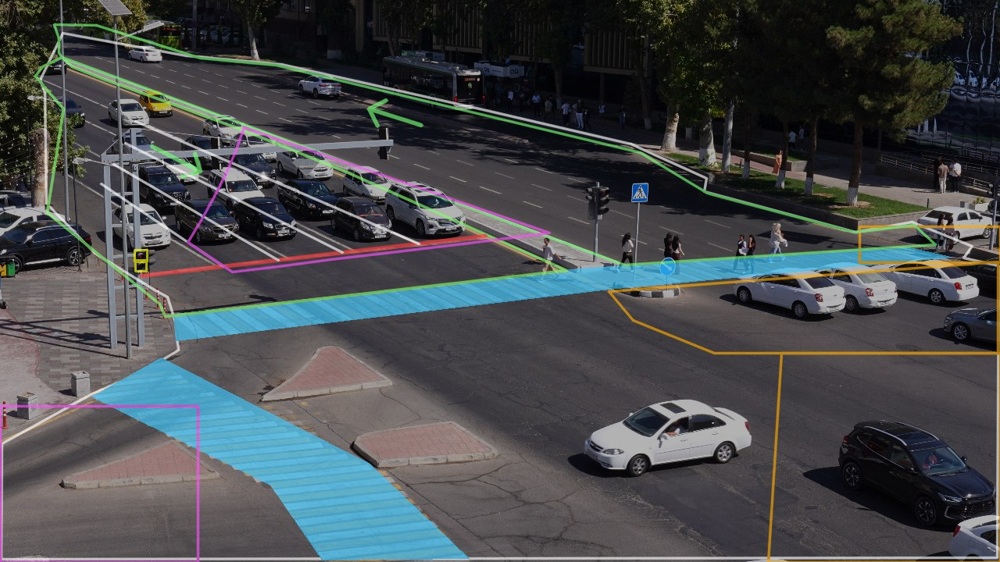
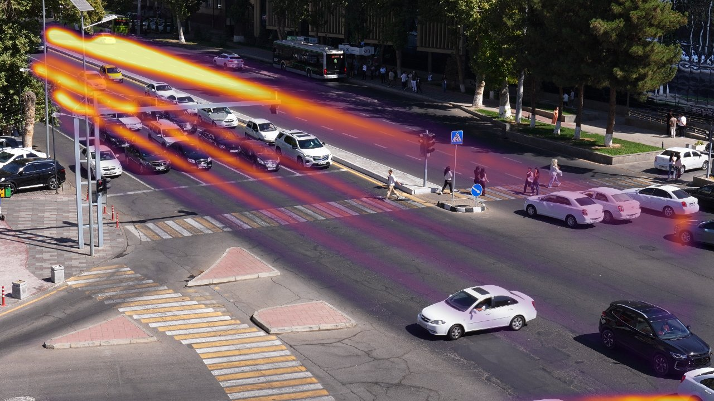
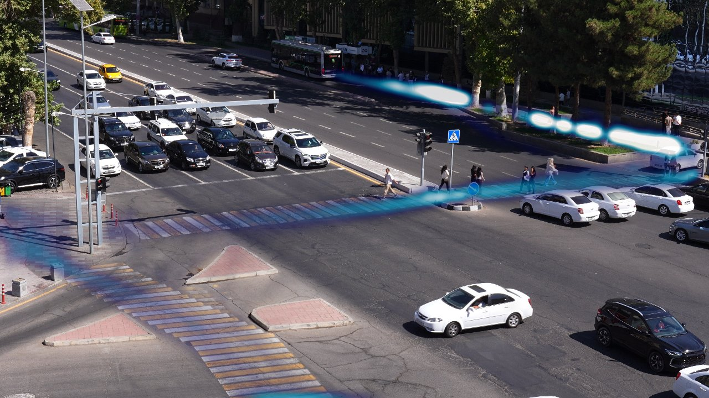
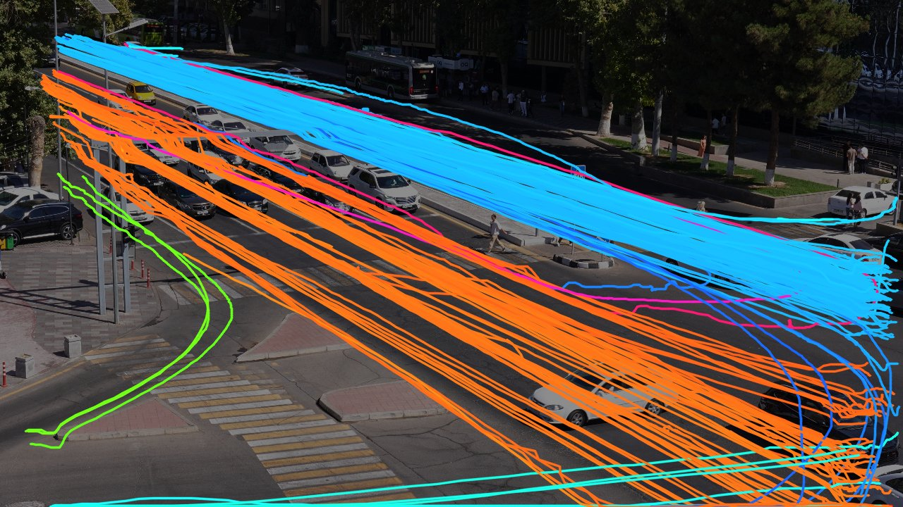
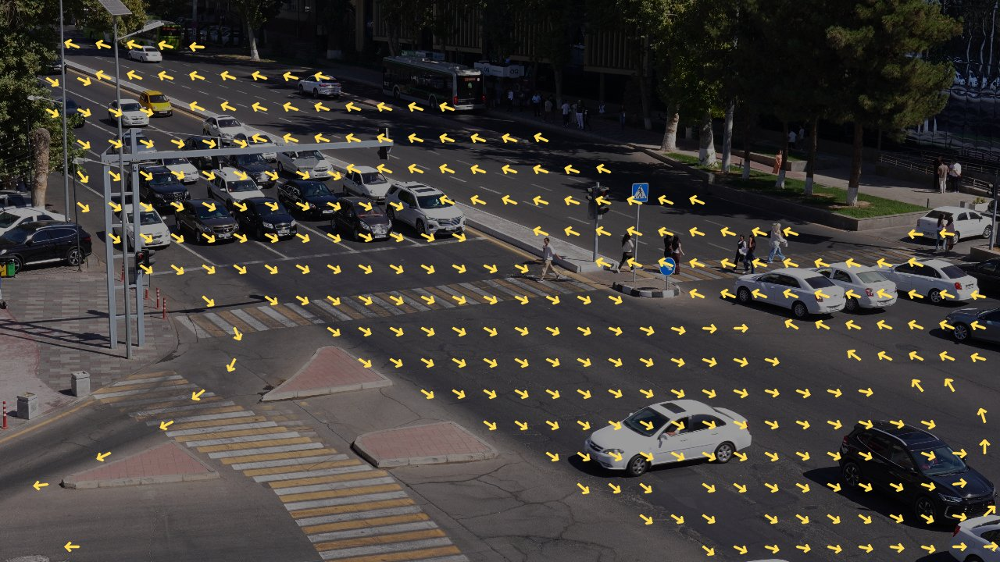

One camera, one junction,
every traffic event on a timeline.
We turn a fixed 4K CCTV view into a list of events, [start, end, label], across 14 official classes, and raise a causal accident-risk score frame by frame. Pre-trained detection and tracking, a hand-drawn map of the junction, and rules tuned on our own labels.
(official
evaluate.py)4 sample videos
on the samples
~33 000 frames

Team WannaCry
Three people, one Colab notebook and a lot of 4K video.
From pixels to a timeline
The camera never moves, so most of the intelligence lives in trajectories and in a map of the junction. Learned models do the seeing; rules do the judging.
- DecodePyAV, reference frames only (≈ every 3rd frame), 1920 pxfast I/O
- DetectYOLO11m @1280, COCO: person, bicycle, car, motorcycle, bus, trucklearned
- TrackByteTrack IDs, speed in box-heights/s, heading, ground pointalgorithmic
- AlignSIFT + RANSAC homography maps the scene map onto each videoalgorithmic
- Judgeone rule per class on trajectories + scene map + traffic-light staterules
- Cleanmerge fragments, shift boundaries, drop blips, validatetuned
What is learned, what is written by hand
| Component | How |
|---|---|
| Object detection | YOLO11m, COCO pre-trained, open weights, not fine-tuned |
| Tracking | ByteTrack (Ultralytics) |
| Scene map | drawn once by us on the reference frame |
| Traffic light | HSV colour of the red and green lamp regions |
| 14 event classes | rules, thresholds in src/config.py |
| Event boundaries | per-class start/end shifts tuned on our labels |
| Accident risk (Part B) | time-to-collision physics, calibrated on normal traffic |
No external training data. The only labels are the 77 events we annotated on the sample videos.
Rules at a glance
- congestion
- ≥ 4 vehicles standing still inside the junction box for ≥ 12 s
- stopped vehicle
- one vehicle still ≥ 10 s inside the box, not part of a jam
- red light
- front crosses the stop line after ≥ 5 s of red
- stop line
- stops past the line on red without entering; ends on green
- jaywalking
- walking pedestrian on the carriageway away from crosswalks
- failure to yield
- car drives through a crosswalk with a walker within 1.5 car widths
- solid line
- persistent lane change across the 4 solid lines before the stop line
- illegal turn
- turn into the bottom-left road from an inner lane
- wrong way
- moving against the drawn lane direction
- accident
- two vehicles meet and stay stopped while traffic around keeps moving
Part B: accident anticipation
Six times a second the estimator runs its own detector and tracker on the frames it has seen so far. For every pair involving a moving vehicle it predicts the time to closest approach and the miss distance: risk = exp(−TTC / 1.5 s) · exp(−miss² / 2σ²). Car-following in a lane and driving past a stopped car are treated as normal traffic. The most dangerous pair plus a hard-braking bonus is smoothed and mapped through a sigmoid centred on the 99.5th percentile of normal traffic, so 0.5 is crossed only by the rarest conflicts. A time guard thins detection if the 3× time budget gets tight.
What the four sample videos contain
Every number here comes from the tracks our detector produced on the organisers' samples.
| Video | Resolution | FPS | Duration | Frames | Brightness | People | Cars | Buses | Trucks | 2-wheelers |
|---|
The light runs a steady cycle of about 42–45 s red and 33–35 s green. That rhythm drives the queues, so the congestion and stopped-vehicle rules ignore the approach lanes where cars wait for green.




Findings that shaped the solution
- Two lighting conditions. C3896 and C3897 are bright midday; C3902 and C3905 are dusk (brightness 65 and 43 against 95). Detection had to work at both, which ruled out colour-threshold tricks for vehicles.
- The view shifts slightly between clips. C3902 is offset by 130 px, C3905 by 75 px at 4K. We align the scene map to every video with a homography instead of redrawing it.
- Queues are normal here. A steady red/green cycle fills the approach every minute. Counting stopped cars naively produced congestion events every cycle, so congestion only counts cars stuck inside the junction box.
- Pedestrians outnumber cars. 350–800 people per clip, many crossing outside the zebra. Jaywalking needs a buffer around crosswalks and ignores low-confidence detections.
- 4K decoding dominates runtime. Two thirds of Part A time is spent decoding; we decode only reference frames, which is enough for tracking at ≈ 10 fps.
Predictions against our labels
Click an event on the timeline to jump the video there. Top row of each class is our prediction, bottom row is our label.
Per-class score
| Class | Labels | Pred. | F1 @0.3 | @0.5 | @0.7 | Mean |
|---|
How the score moved
- 0.12first rules, before any tuning
- 0.27junction box for congestion and stopped cars, red must be ≥ 5 s, stricter jaywalking
- 0.32solid lane lines from the vanishing point, illegal-turn zone
- 0.346per-class start/end shifts: rules fired ≈ 1 s after a person marks the start
Scores are on the labels we tuned against, so the hidden test set will score lower.
One detected example per class
Where it fails
Try it on your own clip
Upload an .mp4 from the same camera, up to 1 minute and 300 MB. It runs on a free CPU, so expect about 2–4 minutes; a progress bar shows each stage. You get the event table, the timeline, the risk curve and an annotated clip.
If the embedded demo does not load, open it on Hugging Face. The demo uses the lighter YOLO11n model for CPU speed; the submission uses YOLO11m on GPU.
What worked, what did not, what next
Worked
- A hand-drawn scene map plus per-video homography: one map serves every clip.
- Defining the junction box (road minus approach lanes minus queue zones) fixed congestion and stopped-vehicle false alarms from red-light queues.
- Solid lane lines built from the lanes' vanishing point instead of clicking them by hand.
- Tuning event boundaries: +0.03 Score A just by matching when people mark the start.
- A cached track file per video: rule changes re-score in seconds, without the GPU.
Did not work
- Contact-based accident and near-miss rules fired on every queue; near miss is off.
- A road-obstacle detector from background differences produced only false alarms.
- OpenCV decoding in a thread was slower than PyAV reference-frame decoding.
- On Colab's 2 CPU cores even the harness's own full decode takes 3.3× real time, so we could not measure the final time budget there; the judges' machine has 8 cores.
- Part B cannot be validated: the samples contain no accidents.
Next
- Calibrate Part B and train a clip classifier for accident / near miss on public crash datasets (DoTA, CCD).
- More labelled footage with a second annotator, to make boundaries and rare classes reliable.
- Illegal U-turn and wrong-way rules validated on synthetic reversed clips (tooling exists in
tools/synth.py). - Hardware video decoding to cut runtime.